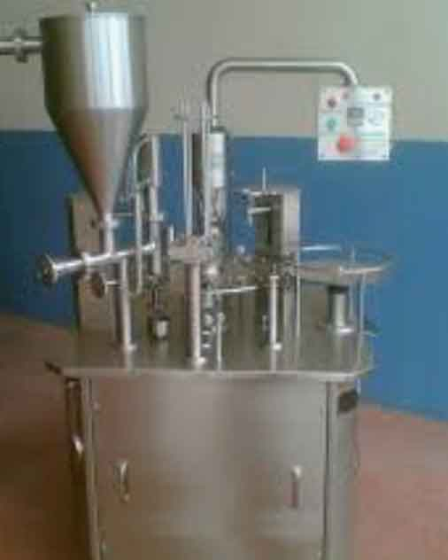

İKİLİ BARDAK DOLUM MAKİNASI
Koru Makina
Tam otomatik ayran dolum makinası, ayranı hijyenik ve hızlı şekilde şişe , bardak veya diğer ambalajlara doldurmak için tasarlanmış endüstriyel bir dolum sistemidir.
Özellikle süt ürünleri fabrikaları, içecek üreticileri ve ayran imalat atölyelerinde kullanılır.
Ürün besleme , dolum, kapak kapatma ve etiketleme işlemlerini tek hat üzerinde otomtik olarak yapar.
KORU İKİLİ ROTARY BARDAK DOLUM MAKİNASI ÇALIŞMA PRENSiBi
TABLA Makinemiz motor ve redüktöre bağlı olup ha raketini mekanik şanzımandan alır ve üstünde bulunandöner tablayı çevirir, Döner tabla üzerindeki soketler tek tip bardağa uygun dizayn edilecektir.
DÜŞÜRME Bardaklar otomatık dörtlü olarak düşürülür , bu esnada alt kısımda vakum Vasıtasıylabardakların bırbırınden ayrılması ve yuvaya oturması saglanır.
VOLUMETRIK NOZULLU DOLUM: Fotosel bardağı gördüğünde dolum tek seferde bardak ıcersıne ıstenılengramajda dörtlü volumetrik ürün dolumunu yapar , ( ayran , mayalı süt doluma uygundur)
KAPAK KOYMA Yuvada dörtlü olarak dizili alumınyum hazır kapaklar vakum vasıtasıyla otomatık olarak alınırve bardak uzerıne konur, Kapak bırakma sistemi; Tek pistondan hareketini alan ve iki adet kapak bırakmaaparatı olmak üzere numuneye göre özel tasarım yapılacaktır. Kapak emiş vantuzları kapak formunauygundur , Ve zamanla deformasyona uğrayan vantuzlar kolaylıkla civatasından sökülerek değiştirilmektedir
KONTROL SENSÖR Kapaklar konmuş olan kaseler kapak kontrol indktiv sensörü altından geçerek,yapıştırma istasyonu altına gelir
YAPISTIRMA istenılen sıcaklıkta alümınyum hazır folyoya yapısması saglanır, Sıcaklık kontrolü pano uzerındedıgıtal gostergeden ( iSi KONTROL CIHAZINDAN) ayarlanır. Yapıstırma pistonu üzerındekı magnetık sensorleryardımıyla makına da olusabılecek sıkıntılar engellenmıs olur.
ÇIKIŞ KONVEYÖRÜ İşlemi biten ürünler kaldırma pistonu ile konveyor üzerine itici kol yardımıyla banthızasına çıkartılır . Bant üzerinden ilgili personeliniz tarafından kaseler elle toplanacaktır. Konveyör bantsistemi tutucu konsollar sayesınde kaselerın hizalanması sağlanmaktadır. Konveyör bant PU bant sistemindedizayn edilecek olup bantın altında bulunan kaydırmaz fitiller sayesınde konveyörün hızlı aşınmasınıengelleyerek kullanım ömrünü uzatarak daha fazla kullanım sağlayacaktır.
MONTAJ VE KURULUM
Makinenin montaj ve kurulum işlemi satıcı tarafından yapılacaktır. Ancak makineyi kurulacakalana getirmek alıcının sorumluluğundadır.
Makinenin montaj ve kurulumu için gerekli her türlü teknik ihtiyaç ve gereklilikler alıcıtarafından karşılanacaktır. Hava ve elektrik bağlantıları, makine/makinelerin çalışır halegetirilebilmesi için gerekli her türlü alt yapı iş ve işlemleri alıcı tarafından standartlara uygunolarak hazır hale getirilecektir. Bu alt yapı işlemlerinin eksiklik ve hatasından kaynaklanan hertürlü sorun garanti kapsamında değerlendirilmeyecek ve bunlardan alıcı sorumlu olacaktır.
Satıcı tarafından, bütün makine ve teçhizatın montajı tamamlandıktan sonra test edilerek çalışırvaziyette, deneme üremi yapılarak bırakılacaktır. Deneme üretimine ilişkin her türlü hammaddeve ekipman alıcı tarafından hazırlanacaktır. Test ve deneme üretiminde aksaklıkların oluşmasıhalinde bunlar satıcı tarafından giderilecektir.
Montaj ve kurulum esnasında alıcının belirleyeceği 1 personeline kullanım, bakım vs sairhususlarda uygulamalı eğitim verilecektir.
Makine/makineler "Montaj-Eğitim ve İşletmeye Alma Tutanağı" ile satıcıya teslim edilecektir.Bu tutanağın imzalanmasından sonra makinenin numune ve deneme üretimine uygun olaraküretim yapmadığı iddiası satıcı tarafından kabul edilmeyecektir.
Alıcı montaj ve kurulum için giden ekibin tüm konaklama ve ulaşım masraflarını karşılamaklayükümlüdür.Ulaşımı sadece Turkish Airlines firmasıyla gerçekleştirilebilir, alıcının aksi bir talebiolursa satıcının onayını almak zorundadır.
Satıcı firma elemanları (min 1 kişi) alıcı firma fabrikasında montaj için 2 gün kalacaklardır.Ekstragün talebi olması halinde servis faturası kesilecektirMONTAJ
HAVA 6- 8 BAR DAKİKADA 1250 LT/DAK.İHTİYAÇ VARDIR.
ELEKTRİk 380 V 3 KW/SAAT SARFİYAT VARDIR.Fiyatlarımıza %20 KDV dahil değildir .Fatura kesiminde KDV nakit tahsil edilecektir.
Fiyatlarımız USD verilmiş olup fatura kesim tarihinde TCMB döviz satış kurundan TL olarak fatura edilecektir
Ödemenin %50'lik ilk kısmı sipariş onayında, % 50 kısım makineteslim öncesi
GARANTi Sistem kurulumundan olduğu tespit edilen sorunlar 1 yıl boyuncagarantimiz kapsamında düzeltilecektir. Sistemin yanlış kullanılmasından dolayısisteminin kullanılmaz hale gelmesi halinde ve benzeri durumlarda sistemin tekrarkurulup çalıştırılması veya sisteme ilave yapılması için ektra servis bedelialınacaktır. Firmanız tarafından seçilen eğitici personeş sadece teklifimizinkapsamında bulunan ürün ve işlere yönelik işletme ve bakım konularından sorumluolacaktır.
TESLİM SÜRESİ 45 -60 İŞ GÜNÜ. Numuneler tarafımıza ulaştıktan sonra teslimsüresi başlıyacaktır) İmalata başlanabilmesi için alıcının numune teslim etmesigerekiyor ise bu numuneleri iş bu sözleşmenin tesliminden itibaren 5 gün içindesatıcıya teslim edecektir. Numunelerin teslim edilmemesi nedeniyle makineninimalatına başlanamaması veya imalatın gecikmesinden hiçbir şekilde satıcı sorumluolmayacaktır. Gecikilen süre imalat-teslim süresine ilave edilecektir.
ÇIKIŞ KONVEYÖRÜ NAKLiYE : Makınaların nakliyesi ATÖLYE ERENLER sahamızdan olup makinaların nakliyesive nakliye sigortası alıcı firmaya aittir.
SPESİFİKASYONU
Makine dolum ve kapama kısmı iş güvenliği açısından plexi glass cam ile kapalıkabindir,Dolum grubu ; 304 kalite paslanmaz çelikten dizayn edilmiştir.
Elektrik malzemeleri : LEUZE , İNOVANCE , MOLVEX markalardır.
Sensörler: LEUZE
Driver sürücü: İNOVANCE
Makine ve üzerindekı Motor - reduktör: YILMAZ REDUKTÖR, ELK MOTOR
PLC Kontrol: PLC ana kontrol sistemi : İNOVANCE
EKRAN: Renkli dokunmatik ekran : İNOVANCE
Klemens: MOLVEX
Röle: MOLVEX
Basınç kontrol ve vakum cihazı: EXPFLEX, SDPC
Makine şase ve Konveyör aksamları : AISI 304 kalite Paslanmaz Çeliktir
HAVA 6- 8 BAR DAKİKADA 1250 LT/DAK.İHTİYAÇ VARDIR.
ELEKTRİk 380 V 3 KW/SAAT SARFİYAT VARDIR.Fiyatlarımıza %20 KDV dahil değildir .Fatura kesiminde KDV nakit tahsil edilecektir.
Fiyatlarımız USD verilmiş olup fatura kesim tarihinde TCMB döviz satış kurundan TL olarak fatura edilecektir
Ödemenin %50'lik ilk kısmı sipariş onayında, % 50 kısım makineteslim öncesi
GARANTi Sistem kurulumundan olduğu tespit edilen sorunlar 1 yıl boyuncagarantimiz kapsamında düzeltilecektir. Sistemin yanlış kullanılmasından dolayısisteminin kullanılmaz hale gelmesi halinde ve benzeri durumlarda sistemin tekrarkurulup çalıştırılması veya sisteme ilave yapılması için ektra servis bedelialınacaktır. Firmanız tarafından seçilen eğitici personeş sadece teklifimizinkapsamında bulunan ürün ve işlere yönelik işletme ve bakım konularından sorumluolacaktır.
TESLİM SÜRESİ 45 -60 İŞ GÜNÜ. Numuneler tarafımıza ulaştıktan sonra teslimsüresi başlıyacaktır) İmalata başlanabilmesi için alıcının numune teslim etmesigerekiyor ise bu numuneleri iş bu sözleşmenin tesliminden itibaren 5 gün içindesatıcıya teslim edecektir. Numunelerin teslim edilmemesi nedeniyle makineninimalatına başlanamaması veya imalatın gecikmesinden hiçbir şekilde satıcı sorumluolmayacaktır. Gecikilen süre imalat-teslim süresine ilave edilecektir.
ÇIKIŞ KONVEYÖRÜ NAKLiYE : Makınaların nakliyesi ATÖLYE ERENLER sahamızdan olup makinaların nakliyesive nakliye sigortası alıcı firmaya aittir.
01 KORU TEKLİ KABİNLİ Ø75 BARDAK DOLUM VE KAPAMA MAKİNASI KAPASİTE: 1250 ADET / SAAT 1 Adet
02 KORU TEKLİ KABİNLİ Ø95 BARDAK DOLUM VE KAPAMA MAKİNASI KAPASİTE: 1250 ADET / SAAT 1 Adet